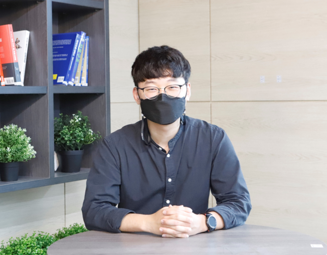

I'm Dong-Hyun Sim, Undergraduate at Sejong Univ. majoring in IME(Intelligent Mechatronics Engineering). Since 2017.
As C.E.O. I'm leading a start-up company, WHATs LAB
As we said("Told you we are Awesome"), WHATs LAB research VR Interface (Air Motion Interface) and Deep Learning solutions with endless innovation.
Warning. This Web CV is outdated. Definitely maybe.
Please contact me through the information below.